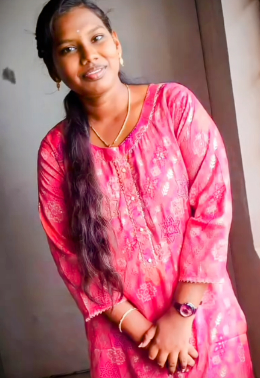

Welcome
Welcome to my page! I am Pavithra, a passionate civil engineer with a strong interest in infrastructure development and sustainability. Below is a summary of my professional experience and qualifications.
Pavithra
Contact: xxxxxx2306 | Email: pavithra@gmail.com
Objective
Dedicated and highly motivated Civil Engineer with hands-on experience in infrastructure development, construction management, and environmental sustainability. Equipped with solid analytical and problem-solving skills to contribute to large-scale civil projects. Eager to join a dynamic organization where I can apply my technical skills and further develop professionally.
Education
Bachelor of Engineering in Civil Engineering
Saranathan College of Engineering (Autonomous), Trichy
Graduation Date: 20XX
- Key courses: Structural Engineering, Transportation Engineering, Geotechnical Engineering, Environmental Engineering, Construction Management
- Capstone Project: Designed a sustainable urban road network, improving traffic flow and reducing congestion.
Professional Experience
Intern - Civil Engineering
[Company Name], [Location] — [Dates]
- Assisted senior engineers in site surveys, quantity estimation, and design reviews for urban development projects.
- Supervised the execution of tasks, ensuring compliance with safety and regulatory standards.
- Prepared detailed reports on project progress and contributed to the planning of infrastructure projects.
Project Engineer - Internship
[Company Name], [Location] — [Dates]
- Collaborated with a team to plan and execute construction projects, including residential buildings and road infrastructure.
- Managed on-site material usage and coordinated with contractors to ensure smooth workflow and timely project completion.
- Implemented quality control procedures, resulting in improved efficiency.
Certifications/Achievements
- Certified in AutoCAD and STAAD.Pro
- Fundamentals of Project Management – [Issuing Organization]
- Environmental Sustainability and Green Building – [Issuing Organization]
Projects
- Urban Infrastructure Development Project: Designed a sustainable road network for a city, improving traffic flow and reducing congestion.
- Low-Cost Housing Project: Developed cost-effective housing models using locally sourced materials, reducing construction costs by 20%.
Professional Affiliations
- Member, Institution of Civil Engineers (ICE)
- Member, Indian Society of Civil Engineers (ISCE)
Skills
- Proficient in: AutoCAD, STAAD.Pro, MS Project
- Construction Methodologies: Strong knowledge of safety regulations and structural design
- Problem-Solving: Expertise in geotechnical analysis, project management
- Soft Skills: Team collaboration, leadership